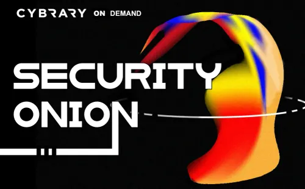
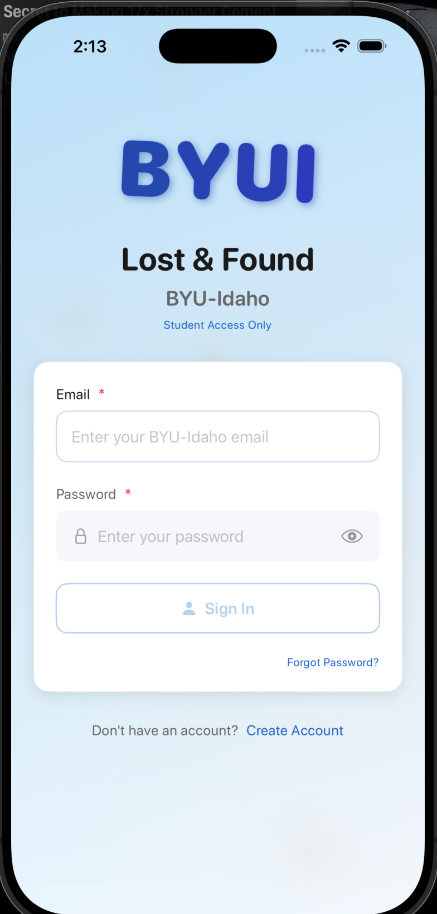

04. PROJECTS & SECURITY LABS

Enterprise Security Capstone — Full Network Build
A complete, defended enterprise network built and hardened across four phases and thirteen weeks — from segmented dual-firewall architecture to Zero Trust access, SOC monitoring, automated incident response, and a final adversary simulation to validate that detections fire and automation responds.
Architecture & Segmentation
Designed a 5-zone network (secure, inside, DMZ, interconnect, outside) with an RFC1918 IP and VLAN schema, deploying Palo Alto (internet-facing) and FortiGate (VDOM) firewalls.
DMZ, NAT & Web Tier
Placed 2 web servers in the DMZ, 1 inside, and 1 in the secure zone; configured NAT/PAT outbound and static NAT inbound, load balancing (NLB) with failover, and locked down Active Directory exposure.
Zero Trust Access
Delivered SSL/TLS VPN, 802.1X port-based access control, Duo MFA integrated with Active Directory, and a Guacamole ZTNA gateway for brokered, identity-aware remote access.
Detection, SIEM & SOAR
Deployed Security Onion (Suricata/Zeek) with custom IDS rules and Sysmon→Splunk telemetry, then automated response via an n8n/Claude Code pipeline that enriches Splunk alerts and pushes blocks to the Palo Alto API.
Enterprise Security Architecture
Designed a 5-zone IPv4 architecture (secure, inside, DMZ, interconnect, outside) with an RFC1918 IP schema, defined trust boundaries, and mapped traffic flows. Deployed Palo Alto (internet-facing) and FortiGate (VDOM) firewalls with interfaces, subinterfaces, static routing, and security policies.
Read writeup
Objective. Segment an enterprise network into distinct trust zones and enforce policy at two independent firewall tiers, so a compromise in one zone can't move freely into another.
What I built. Five zones — Outside, DMZ, Inside, Secure, and an Interconnect link — on an RFC1918 addressing schema with VLAN sub-interfaces. A Palo Alto zone-based firewall sits at the internet edge; a FortiGate (VDOM) sits behind it on the interconnect. I configured static routing, NAT/PAT for outbound traffic, static NAT for published DMZ services, and least-privilege security policies for every inter-zone flow.
Outcome. A defensible topology where the DMZ, user, and secure/AD zones are isolated from each other and all cross-zone traffic is explicitly policy-controlled and logged.
Zero Trust Access & DMZ Infrastructure
Built DMZ web infrastructure (2 web servers) with NLB load balancing and failover, restricting Active Directory exposure to inside zones. Implemented SSL/TLS VPN, 802.1X port-based access control, Duo MFA + AD, and a Guacamole ZTNA gateway to broker identity-aware, Zero Trust remote access.
Read writeup
Objective. Publish web services to the internet safely and give remote users identity-verified access without exposing internal systems like Active Directory.
What I built. Two Windows web servers behind an Ubuntu NLB load balancer with failover in the DMZ. For access control I deployed an SSL/TLS VPN, 802.1X port-based authentication, Duo MFA integrated with Active Directory through a Duo Auth Proxy, and a Guacamole gateway providing identity-aware, browser-based (ZTNA) access to internal hosts.
Outcome. Every remote and internal session is authenticated, MFA-gated, and least-privilege; AD is reachable only from inside zones, and the DMZ stays resilient through load-balanced failover.

Security Onion SOC & IDS Lab
Deployed Security Onion in the secure zone to monitor DMZ traffic. Wrote custom Suricata rules — one detecting obfuscated "rigby" strings with arbitrary whitespace, another flagging outbound SYN requests from web servers — and collected Sysmon telemetry from Web1, Duo, and AD via Elastic Agent.
Read writeup
Objective. Gain full visibility into DMZ traffic and detect attacker behavior at both the network and endpoint level.
What I built. A Security Onion sensor in the secure zone with a dedicated monitor NIC mirroring DMZ traffic. I wrote two custom Suricata rules — one that matches an obfuscated "rigby" string tolerant of arbitrary whitespace, and one that flags outbound SYN requests originating from the web servers (a signal that a server has been compromised and is beaconing out). Zeek supplied protocol metadata, and Sysmon endpoint telemetry from Web1, the Duo host, and AD was shipped in through Elastic Agent.
Outcome. Combined network and endpoint detection driven by environment-specific rules, all feeding a single investigative platform for triage.

SIEM Threat Detection Engineering
Deployed Splunk and ingested logs from the firewalls (syslog), web servers (IIS), and Security Onion. Built working dashboards and detections for brute-force, scanning, suspicious URLs, and beaconing behavior across the environment.
Read writeup
Objective. Centralize logs from across the environment and build the detections and dashboards a SOC analyst actually works from.
What I built. A Splunk deployment ingesting firewall syslog, IIS web-server logs, and Security Onion alerts. On top of that I built dashboards and saved searches for brute-force attempts, port and host scanning, suspicious URL patterns, and beaconing.
Outcome. A single pane of glass for triage, with alerts that map to real attacker techniques and hand off cleanly to the response pipeline.
SOAR Incident Response Automation
Built an automated response pipeline with n8n and Claude Code: a Splunk alert triggers extraction of the source IP, GeoIP and threat-intel enrichment, a malicious/benign decision, and an auto-pushed block rule to the Palo Alto API. Validated end-to-end with a threat simulation — scanning and web attacks against the DMZ — confirming detections fire and automation responds.
Read writeup
Objective. Cut incident response time by automating containment instead of blocking attackers by hand.
What I built. An n8n workflow (assisted by Claude Code) triggered by a Splunk alert: it extracts the source IP, enriches it with GeoIP and threat-intelligence lookups, makes a malicious-versus-benign decision, and automatically pushes a block rule to the Palo Alto firewall via its API.
Validation. I ran a threat simulation — scanning and web attacks against the DMZ — and confirmed end-to-end that the detections fired and the automation blocked the source with no manual step.
Outcome. Alert-to-block containment in seconds, demonstrating a working SOAR loop from detection through response.
Leadership & Community Impact
Peer Mentorship
Assisted peers with cybersecurity and network troubleshooting labs, fostering collaborative learning.
Case Study Leadership
Led collaborative case studies in risk and compliance analysis, developing practical security solutions.
Vulnerability Management
Applied vulnerability management concepts in simulated environments, enhancing practical security skills.